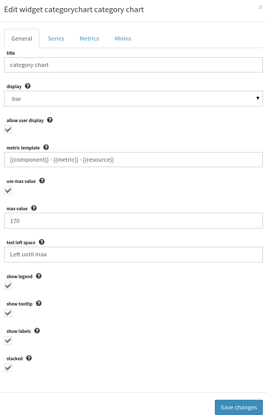
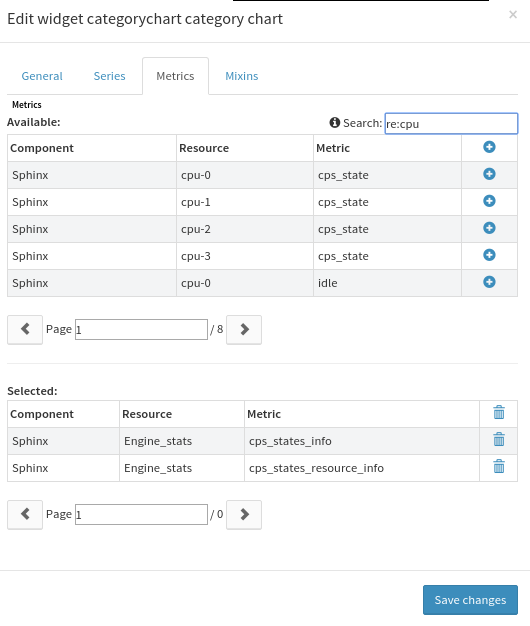

How to use Category chart¶
Overview¶
The Canopsis category chart is a widget that allows to display metrics depending on categories
Create a category chart in a view¶
Inserting a category chart widget in a canopsis view requires management rights. Please refer to the canopsis rights management to know more about this topic.
First, choose a view where the category chart will be inserted. When done, switch to insert widget edition mode, choose the category chart in the list and click on it. The specific form for the category chart is displayed and let input this widget configuration.
Category chart parameters are explained below.
Category chart widget configuration¶
options¶
- title: the widget title
- display: chart representation, can be one of bar, gauge, progessbar, pie, donut
- allow user display: allow user to dynamically change the chart type from the view.
- metric template: Handlebar template to build the metric name from context information. Available context information are connector, connector_name, component, resource, metric. Template can be like :
{{component}} - {{connector}} : {{metric}}/!if many metric get the exactly same string name, they will be misunderstood by the chart. - use max value: tell the chart to take care of the user defined max value.
- max value: define a maximum value for the chart and series. If series value’s sum is inferior than the max value, then a new serie is dynamically added to the chart with the value
max_value - sum(series) - show legend: enable legend displaying on the chart
- show tooltips: enable displaying of tooltips on the chart
- show labels: enable displaying of labels on the chart
- stacked: for bar chart based renders, stacked option will make the chart with stacked bars (bars alignment)
- text left space: text to fill the chart with the possible dynamic serie created by max value
series¶
This section allows to choose series to include into the chart.
metrics¶
This section allows to choose metrics to include into the chart.
behaviors¶
The category chart expects that series or metrics are selected from the widget form. When such information is filled, on rendering, the widget will fetch data from Canopsis backend from the period between end date and 10 minutes before. The value displayed is the last value of this interval if any.
With the live reporting, the end date may be dynamically switched and then the category chart data selection will be affected.